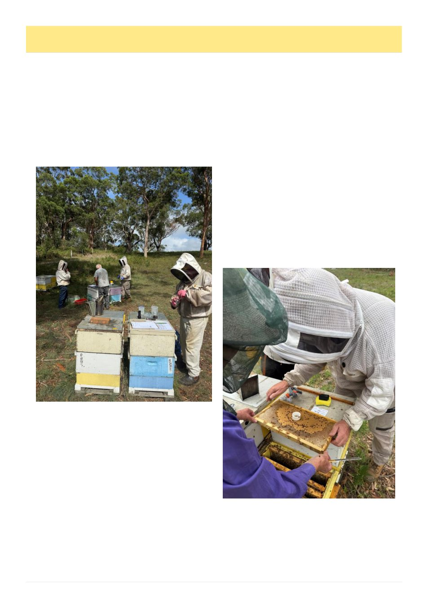

32
Australian Bee Journal
Victorian Beekeepers As Part Of The Solution
Why a Victorian bee resilience network is worth
discussing now
Article & photos by Mark Bichan, VAA Board member
Helping to build the solution
Nathan Whitford opened an important discussion in
the June ABJ when he wrote: „It would be lovely to
have a strain of varroa-resistant honey bees … unfortu-
nately science, bee genetics and breeding isn‟t here yet
either …‟
I don‘t dispute the point, and I commend the Gee-
long Beekeepers Club, and others, for getting on with
the work. The discussion is worth continuing.
As varroa moves through our industry, the need to
act remains front of mind. Treatment, surveillance, ed-
ucation, biosecurity and sound husbandry remain essen-
tial, especially as miticide resistance appears and op-
tions narrow. Genetic improvement must also form part
of our response.
Genetic improvement is patient work: assess, record,
compare and select, then repeat across many colonies
and generations. Thankfully, Victoria already has capa-
ble breeders, commercial operators, sideliners, clubs,
recreational beekeepers and researchers. What we lack
is a practical way to connect their work, realise genetic
gains and carry them from one season to the next.
That is the gap the proposed Victorian Bee Resili-
ence Network (VBRN) would try to bridge.
The lesson from what came before
Australia is not starting from zero. Queen breeders
and beekeepers have improved stock for generations.
Better Bees Western Australia shows what long term
cooperation can achieve, while eastern programs have
brought together research, beekeeper consortias and
private breeders in the past. More recently, Plan Bee
delivered common assessment methods, a national data-
base, a breeding manual and validation of the applica-
tion of estimated breeding values to our industry,
amongst other things.
The hard part appears to be keeping the work going.
Valuable genetics, knowledge and relationships have
depended on individuals carrying them through project
endings, funding changes and changes of ownership.
Earlier programs produced real results and value.
But if people are asked to contribute stock, data, facili-
ties and experience, they need confidence in the struc-
tures, procedures, the records and what happens after
people move on, a project ends or the next industry
shock arrives.
Why now?
The National Honey Bee Breeding Strategy 2024-
2029 proposed coordinated improvement without isolat-
ing varroa resistance from productivity, health, temper-
ament and performance under Australian conditions.
The aim? Resilient, useful bees, not one trait detached
from the colony, apiary or operation around it.
The 2025 Queen Sector Analysis highlights multi-
ple, actionable steps the industry can take to support
this journey. Critically, it reveals that no one business
(Continued on page 33)
Members of the AQBBA conducting assessments in a
VSH collective research apiary. New Castle, 2026.
Members of the AQBBA conducting UBeeO and pin
kill brood assessments as part of the wider screening
within the VSH collective. New Castle, 2026